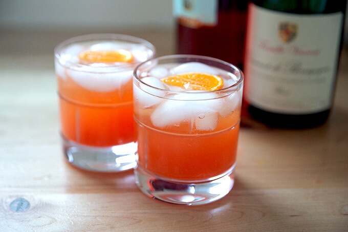

Tangerine Spritz

Description
A fun tangerine cocktail that tastes great with Italian dishes. A mixture of Aperol, Lillet blanc, tangerine juice, and club soda, is all you need for this drink.
Ingredients
1 1/2 cups of freshly squeezed tangerine juice
3/4 cup Lillet blanc
1/2 cup Aperol (bitter orange aperitif)
ice as needed
1 1/2 cups of club soda, chilled
6 slices tangerine
6 kumquats, halved
Steps
- Stir together tangerine juice, Lillet blanc, and Aperol in a pitcher. Chill until ready to serve.
- Fill 6 wine glasses with ice. Divide tangerine juice mixture among glasses and top each with 1/4 cup club soda. Garnish each glass with a tangerine slice and a kumquat.